气缸
普通气缸
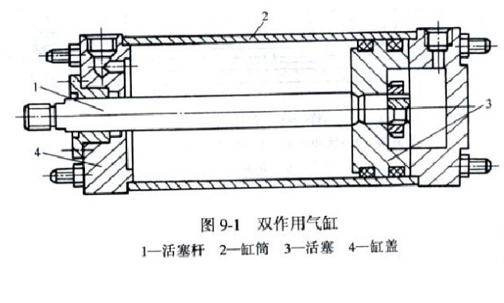
薄膜气缸
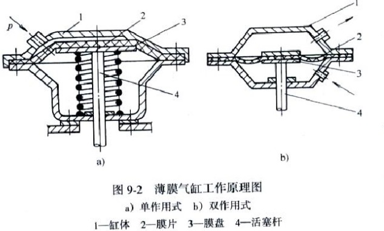
无缸气缸
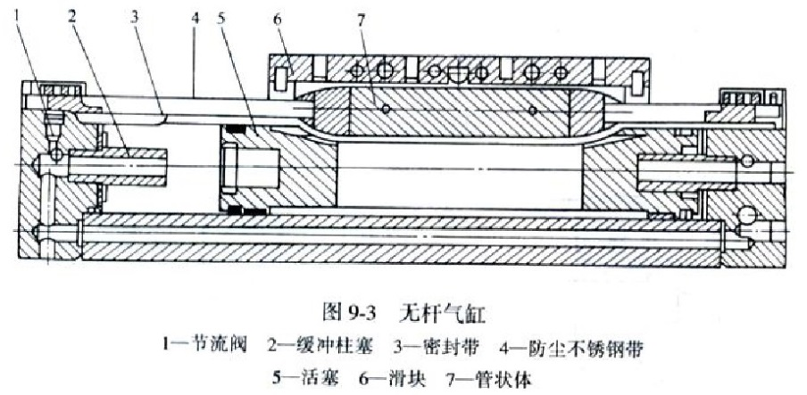
阀门
或门型梭阀
- P1进，P2断，P1->A
- P2进，P1断，P2->A
- P1,P2进，高压->A
- P1=P2，先进气->A
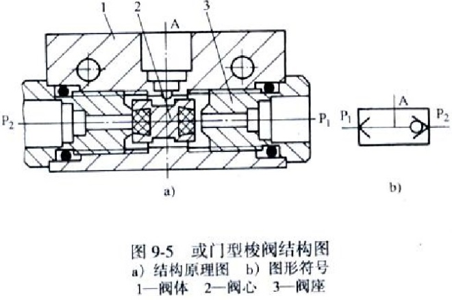
与门型梭阀
- P1进，P2进，低压侧->A
- P1，P2无输出，A口无输出
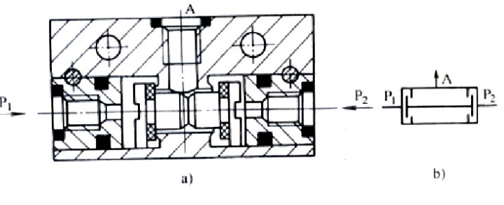
快排阀
- P进气，膜片封住排气口 P->A
- 气流反向流动，P压力下降，膜片封住P，A->O
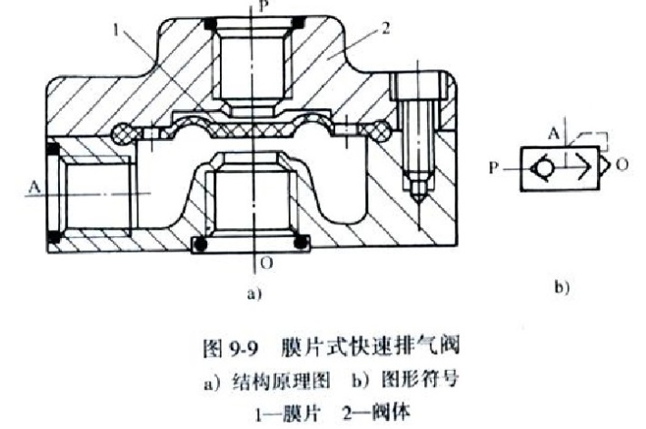
减压阀
气源压力应大于最高输出压力0.1MPa以上
安装在空气过滤后，油雾器前
直动型减压阀
- 气路：P1->11->P2
- 减压原理：通过阀口11的节流作用
- 动作：1下压，膜5下凹，7下降，阀口11开
- 反馈：气流经6进入12，使膜5上升
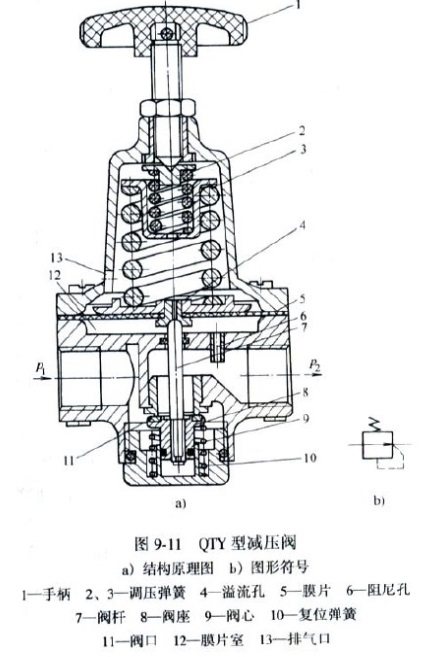
先导型减压阀
- 气路：P1->9->P2
- 一部分：节流孔1->中气室5->喷嘴2->挡板3-反馈->下气室6->阀杆7->排气孔8
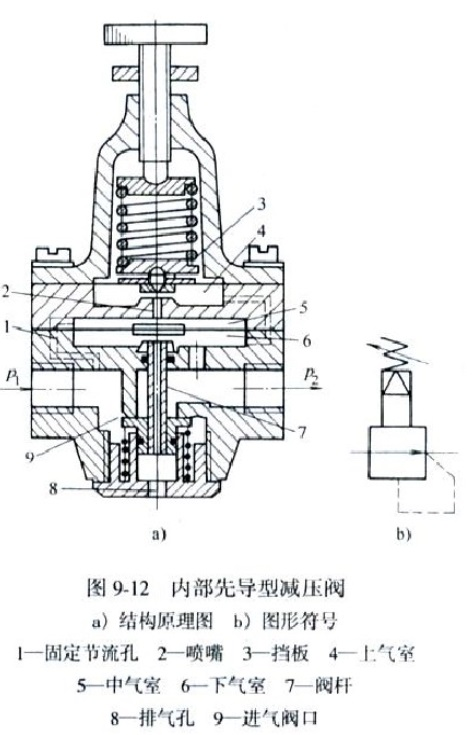
定值器
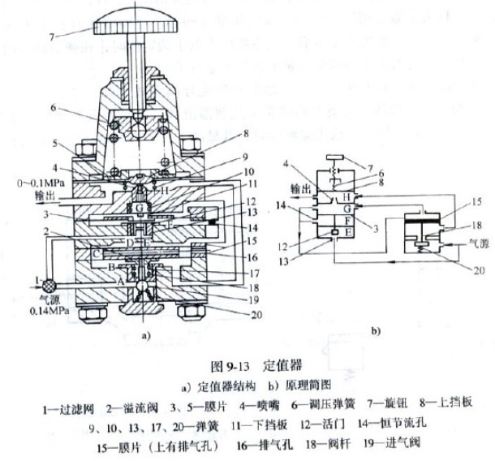
高精度减压阀
- 输入： 0.14MPa 输出： 0~0.1
- 输入： 0.35MPa 输出： 0~0.25
溢流阀
直动型
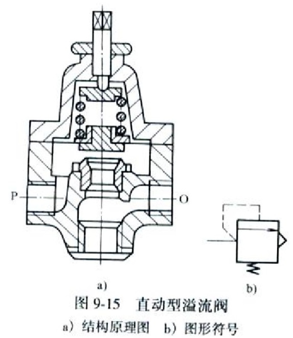
P口连系统，O口通大气，系统压力大于调定压力时气体推开阀芯经O口排至大气
先导型
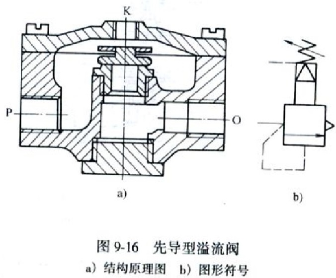
由减压阀减压后的空气从K口进入阀内，代替直动型的弹簧
顺序阀
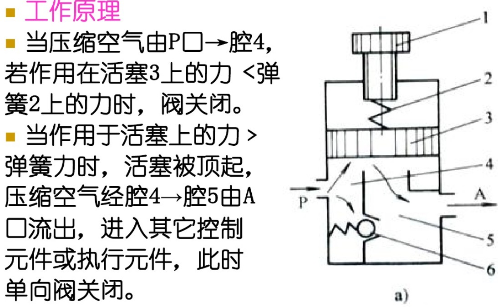
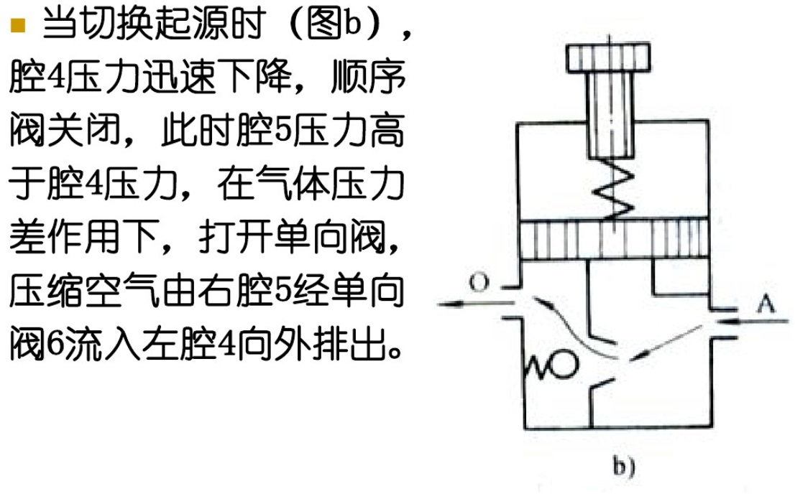
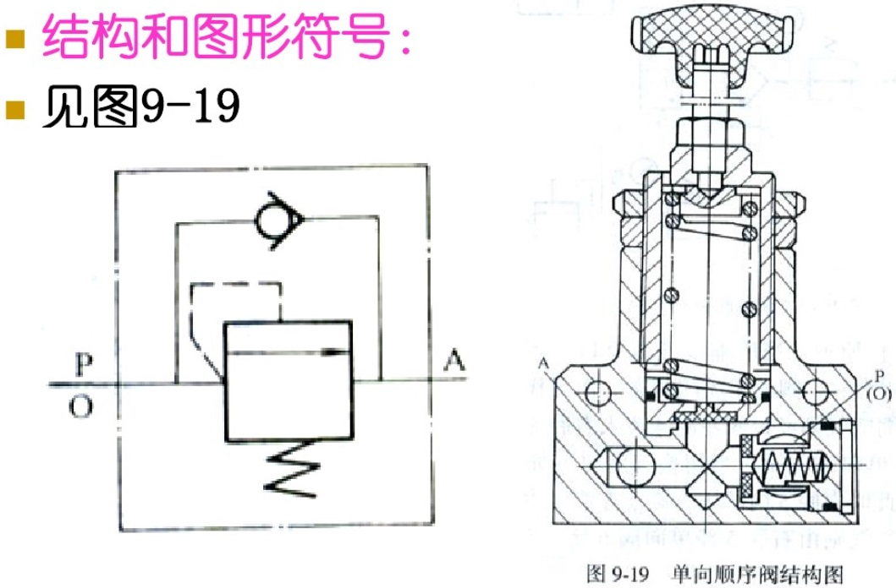
节流阀
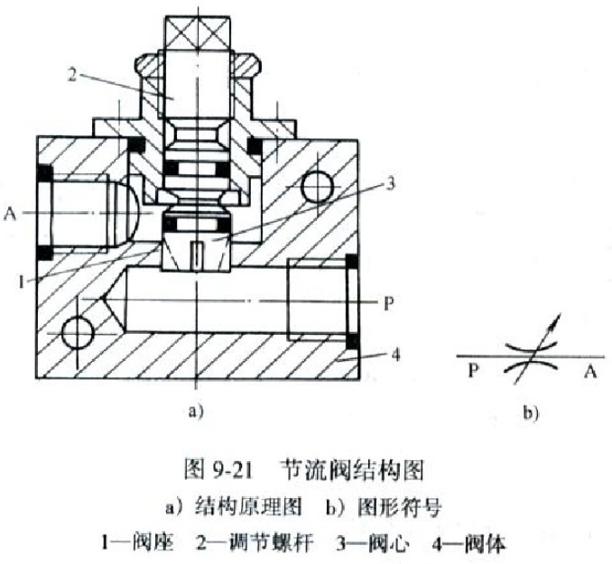
单向节流阀
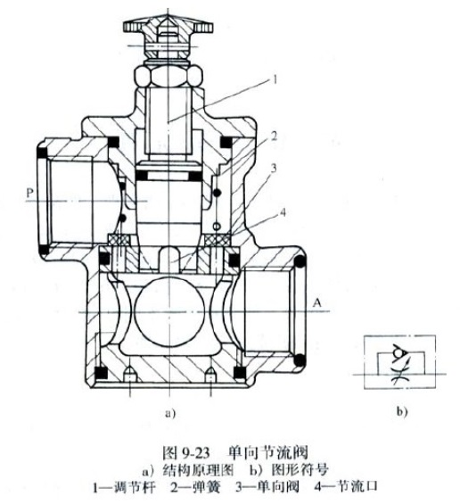
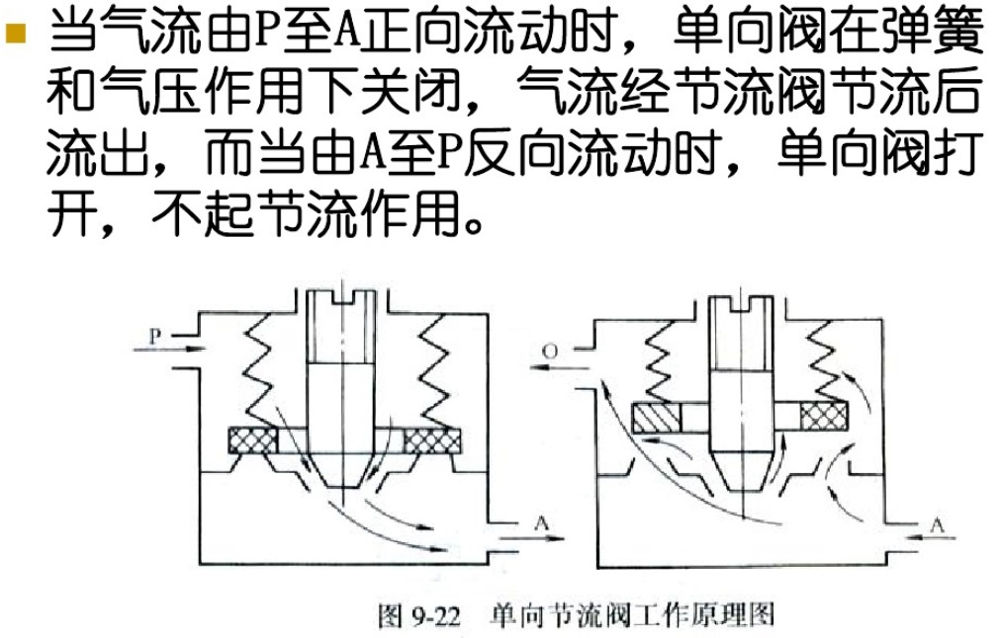
消音节流阀
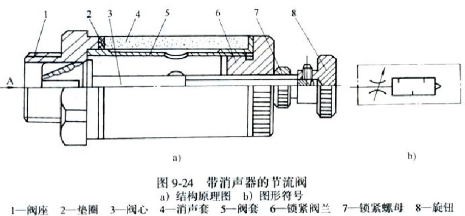
高压截止式逻辑元件
与门
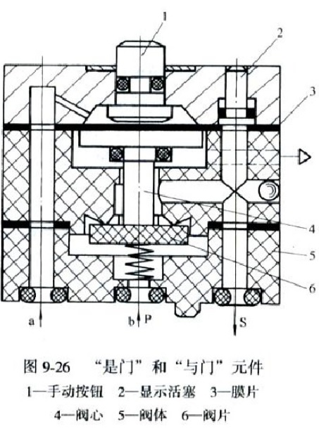
P:气源口 a:信号输入口 S:输出口
- a无气压，阀门关，S无输出
- a有气压，S输出
- 气源P改为信号b时即为与门
或门
如图不解释
气瓶
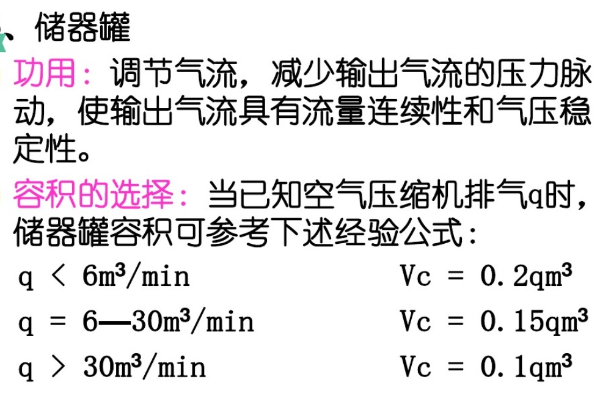
各种气动元件符号
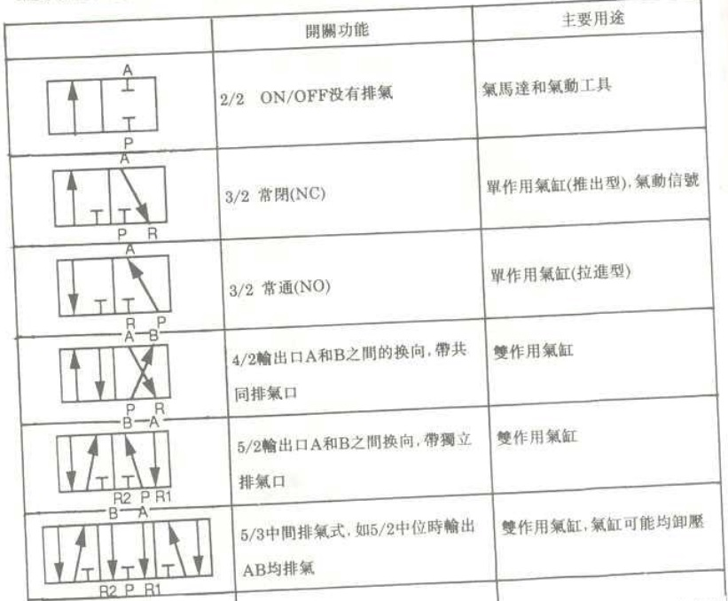
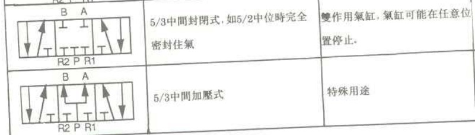